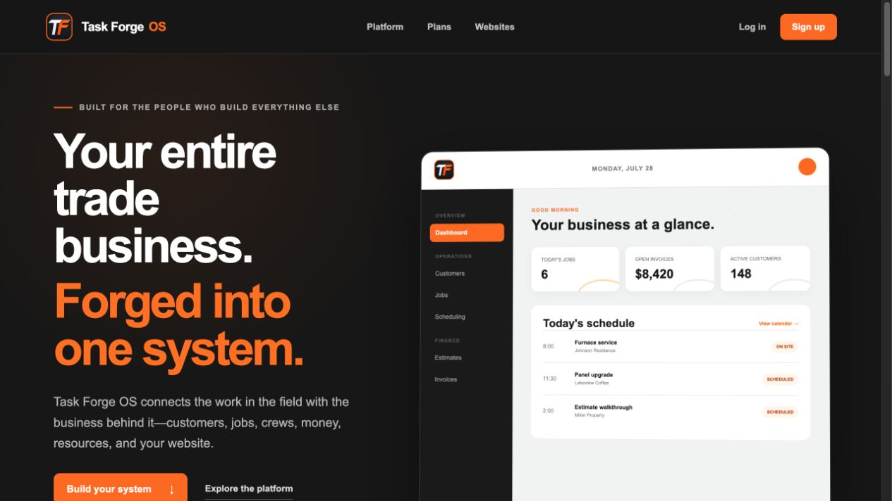

Business websites
Fast, responsive marketing sites that explain the value, establish trust, and turn attention into qualified conversations.
- Positioning and structure
- Responsive development
- Technical SEO foundations
Independent development studio
Savage Development Group builds practical websites, workflow automations, and custom business software around the work that matters.
What we build
Every engagement starts with the audience, the business goal, and the smallest useful version. The result is clearer design, tighter scope, and a product with a job to do.
Fast, responsive marketing sites that explain the value, establish trust, and turn attention into qualified conversations.
Purpose-built portals, dashboards, and workflow tools shaped around the way your business actually operates.
Clear storefronts and buying experiences that help customers understand products and complete purchases confidently.
A focused starting point for small businesses that need a clear, responsive place to be found and contacted.
Start focused then grow
Optional add-on packages available Ongoing website care, SEO, organic content, workflow automation, integrations, and additional pages can be scoped around the business.
Book a free systems assessment ↗Custom business software solutions
When spreadsheets, inboxes, and disconnected subscriptions start running the business, custom software can bring the work into one dependable workflow.
Customer and partner portalsGive people a clear place to submit, review, approve, and track work.
Operations dashboardsBring status, ownership, and next actions into one useful view.
Workflow automationReduce repeated entry and connect the systems already supporting the business.
Focused SaaS productsTurn a proven process or product idea into a practical first release.
ONE WORKFLOW · CLEAR OWNERSHIP · LESS REPEATED WORK
AI integration + business automation
SDG designs controlled systems that reduce repetitive work without hiding important decisions. The goal is not “AI everywhere.” It is a dependable workflow with the right mix of rules, connected software, AI assistance, and human review.
Connect approved business information to focused tools that can help teams search, summarize, classify, extract, and draft—while keeping source access and review visible.
Map triggers, rules, approvals, and handoffs across the tools already supporting the business, then make exceptions visible instead of silently losing them.
Predictable decisions stay deterministic. AI is introduced only where the input requires interpretation, with testing, permissions, fallback behavior, and human review matched to the risk.
A good first project: a frequent process with clear inputs, a measurable bottleneck, and an owner who can review exceptions.
The SDG suite
The SDG Suite is a family of practical business tools designed around specific points of friction—missed inquiries, disconnected handoffs, repetitive follow-up, and limited visibility.
 SDG SUITE
SDG SUITE
Help teams respond to missed calls and new inquiries, organize conversations, and keep follow-up visible.
Move information between forms, inboxes, scheduling tools, and customer systems with less repeated entry.
Turn scattered activity into a focused view of what happened, what needs attention, and what comes next.
Live product
Task Forge OS is SDG’s live contractor-focused platform—connecting customers, jobs, crews, estimates, invoices, resources, and a public business website.

One connected operating layer for the daily work behind trade businesses.
Selected capabilities
Start with the problem in front of you. The right engagement may be a sharper website, a connected operational tool, or a storefront built around a cleaner buying path.
Structure, interface, responsive development, search foundations, and launch support.
Discovery, interface design, data structure, permissions, integrations, and phased releases.
Product organization, storefront design, checkout clarity, and operational connections.
The SDG process
Clarify the audience, the bottleneck, the goal, and the smallest useful release.
Turn the direction into a clear structure, interface system, and delivery plan.
Develop responsively, test real paths, and keep decisions tied to the outcome.
Put the work into use, measure what matters, and plan the next valuable improvement.
An independent studio
SDG brings strategy, design, and development into the same conversation. That means fewer handoffs, clearer decisions, and a tighter connection between the business problem and the thing being built.
Focused scopeBuild the right first version.
Visible progressReview real work as it takes shape.
Practical ownershipLeave with something you can run.
Start a project
Start with a free 15–20 minute business systems assessment. Tell SDG what the business needs to explain, sell, simplify, or connect, and we’ll help define the right first version.
A dated website · a disconnected workflow · a customer portal idea · a focused SaaS product · a better storefront